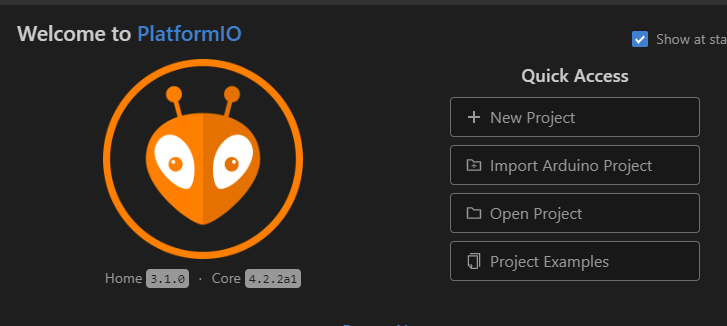

3.1 PlatformIO Programming
This document describes the way to download the PlatformIO software from the github server and configure it for the PlatformIO environment.

The software is stored on the github server in the PlatfiormIO format so you only have to copy the software to you own environment and have PlatformIO work with it.
- If not done, install the PlatformIO environment at https://docs.platformio.org/en/latest/ide/vscode.html
- Goto git page https://github.com/things4u/ESP-1ch-Gateway
- Download the gateway software into the folder of your choice
- Point <File><Add Folder to Workspace...> and add this folder to your workspace
- Modify the platformio.ini file to match your hardware and address
- Check, Build and Upload software